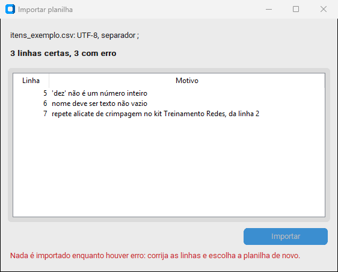
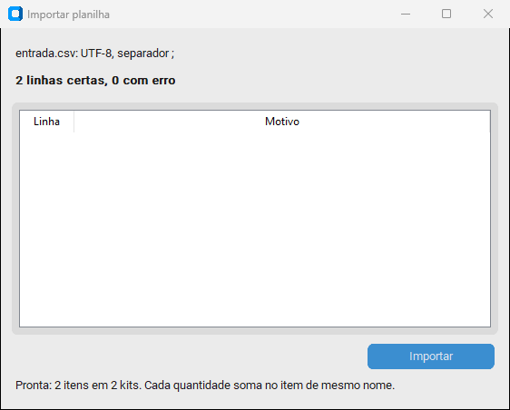

Técnico em Desenvolvimento de Sistemas · Plano de Curso 01/2025
Carga em lote: a planilha inteira ou nada
A planilha conferida na A18 agora vai para o banco. Gravar centenas de linhas pede uma decisão: o que acontece quando a linha 40 dá erro, quando um kit da planilha não existe ou quando a mesma planilha é importada duas vezes? Hoje a importação entra inteira numa transação só ou não entra, recusa kits desconhecidos, lembra cada arquivo pelo resumo SHA-256 dos bytes e registra tudo num log. A janela ganha Importar planilha, que mostra a conferência e só deixa gravar uma planilha sem erros.
A aula continua na janela da A17, no DadosMySQL e na conferência da A18. O esquema ganha a tabela importacao: recrie o banco kits e o kits_teste com o esquema novo. Use dados fictícios.
A coordenação mandou a planilha do estoque, e outra equipe já tinha um importador, abrir_legado.py. Vieram quatro relatos.
A importação parou com um erro na linha 40, e as 38 linhas de antes ficaram no banco; corrigida a planilha e importada de novo, essas 38 dobraram. Um kit Treinamento Rede, sem o s, apareceu do nada. Uma planilha com três linhas erradas foi importada sem as três, e ninguém soube quais faltaram. E, numa sexta-feira, a mesma planilha foi importada duas vezes, e todas as quantidades dobraram.
Em dupla, antes de abrir o código: o que a A10 ensinou que resolve o primeiro relato?
Entrega desta aula
No repositório do projeto: a tabela importacao em sql/mysql/esquema.sql; importar_linhas em kits/repositorio.py; resumo_do_arquivo em kits/planilha.py; kits/importacao.py; DadosMySQL.importar com log em abrir_janela.py; o botão Importar planilha em kits/janela.py; tests/test_importacao.py, tests/test_fontes.py e tests/test_fluxo.py; e a seção Importação no README.md. Faça um commit revisado e envie pelo canal combinado com a turma junto com o registro exportado desta página. Critério: os testes passam, e importar duas vezes o mesmo arquivo grava uma vez só.
Com um commit por linha, cada linha gravada fica, aconteça o que acontecer depois. Se a linha 40 falhar, as 39 de antes já estão no banco, e a planilha corrigida, importada de novo, soma essas 39 outra vez: o relato 1. Com tudo dentro de um em_transacao, a planilha é uma unidade: ou entram todas as linhas, ou nenhuma, e quem corrige a planilha pode importar de novo sem medo.
O erro do meio não vem só da planilha: o banco pode cair, uma soma pode passar do maior INT (o MySQL recusa com o erro 1264), outra pessoa pode estar editando o mesmo item. Por isso a conferência da A18 não basta: ela é a primeira barreira, e a transação é a segunda.
Uma transação grande trava as linhas que já gravou até o commit. Para planilhas de centenas de linhas, como as dos kits, isso dura menos de um segundo; com milhões, a conversa seria outra, com lotes menores e um registro do que já entrou.
Um kit da planilha que não está no banco pode ser um kit novo ou um erro de digitação, como Treinamento Rede. O importador não tem como saber, então recusa a planilha inteira e diz a linha: quem sabe cria o kit pela janela (A15) ou corrige a planilha. Se dois kits têm o mesmo nome, a pendência da A15, também recusa: adivinhar um dos dois seria pior.
Para não importar a mesma planilha duas vezes, cada importação deixa uma linha na tabela importacao com o resumo SHA-256 dos bytes do arquivo. É uma impressão digital: o mesmo arquivo dá sempre os mesmos 64 caracteres; um espaço a mais, outros. A coluna é UNIQUE, então quem recusa a repetição é o banco, mesmo que duas pessoas importem ao mesmo tempo. O registro é a primeira coisa que importar_linhas faz: se a planilha falhar depois, a transação desfaz o registro junto, e ela pode ser importada de novo.
kits/planilha.py: acrescente (e import hashlib no começo)
def resumo_do_arquivo(caminho):
"""SHA-256 dos bytes do arquivo (A19): o mesmo arquivo dá sempre o mesmo resumo; um byte diferente, outro."""
return hashlib.sha256(Path(caminho).read_bytes()).hexdigest()
O log: o que aconteceu, depois que a janela fechou ↗
O aviso da janela some quando ela fecha. Para saber depois quem importou o quê, e por que uma planilha foi recusada, o DadosMySQL registra cada importação com o módulo logging: logging.getLogger('kits.importacao') dá um registrador com nome, e info e warning escrevem uma linha com o nível.
Para onde as linhas vão é decidido uma vez, por quem abre o programa: o if __name__ do abrir_janela.py chama logging.basicConfig com o arquivo importacoes.log ao lado do programa, em UTF-8. Nos testes, nenhum arquivo é escrito: assertLogs captura as linhas e confere.
O tutorial grava um acervo num SQLite em memória, com uma linha que o banco recusa no meio. Crie lote.py na raiz do projeto com o passo 1; os passos 2 e 3 entram no fim do arquivo. Rode com .\.venv\Scripts\python.exe lote.py depois de cada passo.
As telas são de execuções reais desse código, com Python 3.14.
Passo 1 · O arquivo lote.py, com um commit por linha
import sqlite3
# A planilha já conferida... quase: a terceira linha passou com texto no lugar do número.
LINHAS = [('Atlas', 2), ('Gramática', 1), ('Dicionário', 'três'), ('Poesias', 4)]
def preparar():
con = sqlite3.connect(':memory:', autocommit=False)
con.execute("CREATE TABLE livro (titulo TEXT PRIMARY KEY, "
"exemplares INTEGER NOT NULL CHECK (typeof(exemplares) = 'integer'))")
con.commit()
return con
def no_banco(con):
return [titulo for (titulo,) in con.execute('SELECT titulo FROM livro ORDER BY rowid')]
con = preparar()
print('-- commit a cada linha')
for numero, (titulo, exemplares) in enumerate(LINHAS, start=2):
try:
con.execute('INSERT INTO livro VALUES (?, ?)', (titulo, exemplares))
con.commit()
except sqlite3.IntegrityError as erro:
con.rollback()
print(f'linha {numero}: {erro}')
break
print('no banco:', no_banco(con))
Passo 1 · Commit por linha
Rode.
PS C:\projetos\kits> .\.venv\Scripts\python.exe lote.py
-- commit a cada linha
linha 4: CHECK constraint failed: typeof(exemplares) = 'integer'
no banco: ['Atlas', 'Gramática']
Repare: O banco recusou a linha 4, e as duas de antes ficaram.
Passo 2 · Acrescente ao fim: uma transação para tudo
con = preparar()
print('-- uma transação para a planilha inteira')
try:
for numero, (titulo, exemplares) in enumerate(LINHAS, start=2):
con.execute('INSERT INTO livro VALUES (?, ?)', (titulo, exemplares))
con.commit()
except sqlite3.IntegrityError as erro:
con.rollback()
print(f'linha {numero}: {erro}; nada foi gravado')
print('no banco:', no_banco(con))
Passo 2 · Uma transação
Rode de novo.
PS C:\projetos\kits> .\.venv\Scripts\python.exe lote.py
-- commit a cada linha
linha 4: CHECK constraint failed: typeof(exemplares) = 'integer'
no banco: ['Atlas', 'Gramática']
-- uma transação para a planilha inteira
linha 4: CHECK constraint failed: typeof(exemplares) = 'integer'; nada foi gravado
no banco: []
Repare: O mesmo erro, na mesma linha; desta vez, nada ficou.
Passo 3 · Acrescente ao fim: o resumo e o UNIQUE
import hashlib
con.execute('CREATE TABLE importacao (resumo TEXT NOT NULL UNIQUE)')
planilha = 'título;exemplares\nAtlas;2\n'.encode('utf-8')
print('-- a mesma planilha, duas vezes')
for vez in (1, 2):
resumo = hashlib.sha256(planilha).hexdigest()
try:
con.execute('INSERT INTO importacao VALUES (?)', (resumo,))
con.commit()
print(f'{vez}ª vez: registrada, resumo {resumo[:16]}...')
except sqlite3.IntegrityError as erro:
con.rollback()
print(f'{vez}ª vez: recusada ({erro})')
print('com um espaço a mais:', hashlib.sha256(planilha + b' ').hexdigest()[:16] + '...')
Passo 3 · A mesma planilha duas vezes
Rode mais uma vez.
PS C:\projetos\kits> .\.venv\Scripts\python.exe lote.py
-- commit a cada linha
linha 4: CHECK constraint failed: typeof(exemplares) = 'integer'
no banco: ['Atlas', 'Gramática']
-- uma transação para a planilha inteira
linha 4: CHECK constraint failed: typeof(exemplares) = 'integer'; nada foi gravado
no banco: []
-- a mesma planilha, duas vezes
1ª vez: registrada, resumo ddba0b7e46cb062e...
2ª vez: recusada (UNIQUE constraint failed: importacao.resumo)
com um espaço a mais: 2f5ef5cb043bd361...
Repare: A segunda vez foi recusada pelo banco. Com um espaço a mais, o resumo é outro.
Continue no repositório do projeto, na raiz, com o .venv e o banco.ini da A08. Recrie o banco kits e o kits_teste com o esquema novo. Uma pessoa opera e a outra confere; troquem os papéis depois do intervalo.
A ordem importa: esquema, repositório com os testes no kits_teste, DadosMySQL com o log, a JanelaImportacao com os testes de mentira, o botão, o teste de fluxo e, por fim, a importação herdada. Se consultar IA, registre a ajuda recebida e confirme cada sugestão rodando os testes.
A planilha de exemplo, com erros
Capturada com abrir_janela.py, escolhendo o dados/itens_exemplo.csv da A18 em Importar planilha.

Uma planilha sem erros
Capturada do mesmo jeito, com uma planilha de dois itens nos kits do banco.

tests/test_janela.py: acrescente ao BancoDeMentira
def importar(self, linhas, arquivo, resumo):
"""Soma cada linha no kit de mesmo nome, como o importar_linhas; kit que não existe recusa tudo."""
self._talvez_falhar('importar')
nomes = {nome: kit_id for kit_id, nome in self.kits}
for linha in linhas:
if linha.kit not in nomes:
raise ValueError(f'linha {linha.numero}: o kit {linha.kit} não existe; nada foi importado')
for linha in linhas:
self.adicionar(nomes[linha.kit], linha.item)
self.importacoes.append((arquivo, resumo, len(linhas)))
return len(linhas)
sql/mysql/esquema.sql: a tabela importacao
Faça no esquema as duas mudanças do arquivo: o DROP no começo e a tabela no fim, com o resumo único. Recrie o kits e o kits_teste. Entrega: sql/mysql/esquema.sql.
Concluído quando: No cliente mysql, inserir duas vezes o mesmo resumo em importacao dá o erro 1062.
Dica para realizar a atividade
É a mesma ideia do CONSTRAINT que deu nome às restrições da A09, agora com UNIQUE.
-- Mudanças no sql/mysql/esquema.sql.
-- 1. No começo, antes dos outros DROP: a importação não depende de ninguém, então pode sair primeiro.
DROP TABLE IF EXISTS importacao;
-- 2. No fim: uma linha por planilha importada.
-- id, arquivo (o nome, até 255 caracteres), resumo (os 64 caracteres do SHA-256), itens (quantas linhas)
-- e momento (quando, preenchido pelo banco). O resumo não pode se repetir: que restrição faz isso?
CREATE TABLE importacao (
);
No cliente mysql: USE kits_teste; SOURCE sql/mysql/esquema.sql; SOURCE sql/mysql/dados.sql; e o mesmo no kits.
kits/repositorio.py: importar_linhas
Acrescente ao repositório KitInexistente, PlanilhaJaImportada e importar_linhas, seguindo os comentários. Nada de commit dentro da função. Entrega: kits/repositorio.py.
Concluído quando: Os testes de importação de tests/test_fontes.py passam, inclusive o do banco que cai no meio, e os testes das aulas anteriores continuam passando.
Dica para realizar a atividade
Volte ao passo 2 do tutorial. Quem faz o papel do commit no fim, no projeto?
# Acrescente ao fim do seu kits/repositorio.py.
class KitInexistente(ValueError):
"""A planilha cita um kit que não está cadastrado, ou cujo nome está repetido no banco."""
class PlanilhaJaImportada(ValueError):
"""O mesmo arquivo, byte a byte, já foi importado."""
DUPLICADA = 1062 # erro do MySQL para valor repetido numa coluna UNIQUE
def importar_linhas(con, linhas, arquivo, resumo):
"""Grava as linhas conferidas da planilha (A18); cada item soma no item de mesmo nome do kit, como o Adicionar.
Não grava nem desfaz: rode dentro de em_transacao. Devolve quantas linhas foram gravadas."""
# 1. Registre a importação primeiro (arquivo, resumo, quantas linhas). Se o MySQL recusar com o erro
# DUPLICADA, procure quando e com que nome ela foi importada e levante PlanilhaJaImportada:
# 'esta planilha já foi importada em 21/11/2026 14:30, como itens.csv'. Outros erros seguem como vieram.
# 2. Para cada linha, ache o id do kit pelo nome (guarde num dicionário para não perguntar de novo).
# Nenhum ou mais de um: KitInexistente('linha 3: o kit Almoxarifado não existe; nada foi importado')
# ou '... tem 2 cadastros com esse nome; nada foi importado'.
# 3. Grave cada item com adicionar_item, da A13, que soma no item de mesmo nome.
# Nada de commit aqui: se qualquer passo falhar, em_transacao desfaz a planilha inteira.
...
Na raiz do projeto. Testes: .\.venv\Scripts\python.exe -m unittest -v, na raiz do projeto, com o MySQL ligado e o banco.ini da A08. Os testes recriam as tabelas no kits_teste; o kits fica intacto.
tests/test_fontes.py: a importação no MySQL
Acrescente à classe TestFontes os testes do arquivo e escreva os dois marcados com Complete: o kit que não existe e o banco que cai no meio. Entrega: tests/test_fontes.py.
Concluído quando: Os trinta e quatro testes passam com o seu código. Depois faça importar_linhas abrir uma conexao_banco própria para cada linha: o seu teste do banco que cai no meio precisa falhar. Desfaça a troca.
Dica para realizar a atividade
self.linhas(...) monta as Linha como a conferência da A18 entrega; self.contar('importacao') conta os registros.
# Acrescente à classe TestFontes do seu tests/test_fontes.py
# (e, no começo do arquivo, import mysql.connector e from kits.planilha import Linha).
# A19: importar a planilha numa transação só.
def linhas(self, *itens):
"""Linhas como as que conferir devolve: (número, kit, ItemKit), a partir da linha 2."""
return [Linha(numero, kit, ItemKit(nome, quantidade)) for numero, (kit, nome, quantidade) in enumerate(itens, start=2)]
def test_importar_soma_no_item_que_existe_e_cria_o_que_falta(self):
gravadas = self.dados.importar(self.linhas(('Treinamento Redes', 'cabo', 2), ('Treinamento Suporte', 'Alicate', 4)),
'itens.csv', 'a' * 64)
self.assertEqual(gravadas, 2)
self.assertEqual(self.estoque(), [(1, 1, 'Cabo', 5), (2, 1, 'Notebook', 2), (3, 2, 'Cabo', 5), (4, 2, 'Alicate', 4)])
# Complete: Alicate no Treinamento Redes e Fita no Almoxarifado, que não existe: ValueError com a linha 3, o estoque
# continua o ESTOQUE_INICIAL e a tabela importacao continua vazia (self.contar('importacao')).
def test_o_mesmo_arquivo_nao_entra_duas_vezes(self):
linhas = self.linhas(('Treinamento Redes', 'Alicate', 4))
self.dados.importar(linhas, 'itens.csv', 'c' * 64)
with self.assertRaisesRegex(ValueError, r'esta planilha já foi importada em \d\d/\d\d/\d{4} \d\d:\d\d, como itens.csv'):
self.dados.importar(linhas, 'copia.csv', 'c' * 64)
self.assertEqual(self.estoque()[-1], (4, 1, 'Alicate', 4))
def test_kit_com_nome_repetido_no_banco_recusa(self):
self.gravar("INSERT INTO kit (id, nome) VALUES (3, 'Treinamento Redes')")
with self.assertRaisesRegex(ValueError, 'o kit Treinamento Redes tem 2 cadastros com esse nome'):
self.dados.importar(self.linhas(('Treinamento Redes', 'Alicate', 4)), 'itens.csv', 'd' * 64)
# Complete: com a segunda linha somando 2147483647 no Cabo, o MySQL recusa com o erro 1264 (mysql.connector.Error);
# o Alicate da primeira linha também não fica, e nenhuma importação é registrada.
def test_log_registra_a_importacao_e_a_recusa(self):
with self.assertLogs('kits.importacao', level='INFO') as log:
self.dados.importar(self.linhas(('Treinamento Redes', 'Alicate', 4)), 'itens.csv', 'f' * 64)
with self.assertRaises(ValueError):
self.dados.importar(self.linhas(('Almoxarifado', 'Fita', 1)), 'outra.csv', '0' * 64)
self.assertEqual(log.output, ['INFO:kits.importacao:importada itens.csv: 1 itens',
'WARNING:kits.importacao:recusada outra.csv: linha 2: o kit Almoxarifado não existe; '
'nada foi importado'])
def contar(self, tabela):
with conexao_banco(TESTE) as con:
cur = con.cursor()
cur.execute(f'SELECT COUNT(*) FROM {tabela}')
return cur.fetchone()[0]
Na raiz do projeto. Testes: .\.venv\Scripts\python.exe -m unittest -v, na raiz do projeto, com o MySQL ligado e o banco.ini da A08. Os testes recriam as tabelas no kits_teste; o kits fica intacto.
abrir_janela.py: importar, log e escolher_arquivo
Acrescente ao abrir_janela.py o registrador, o DadosMySQL.importar com as duas linhas de log, escolher_arquivo e a configuração do log no if __name__. Acrescente também resumo_do_arquivo ao kits/planilha.py, como no bloco da seção sobre integridade. Entrega: abrir_janela.py e kits/planilha.py.
Concluído quando: O teste do log de tests/test_fontes.py passa, e, depois de importar pela janela, importacoes.log tem a linha da importação.
Dica para realizar a atividade
warning antes do raise, info depois do sucesso. E o arquivo do log fica ao lado de quê?
# Mudanças no seu abrir_janela.py da A17. O resto continua igual.
import logging
from pathlib import Path
from tkinter import filedialog, messagebox
# No import do repositório, acrescente importar_linhas.
registro = logging.getLogger('kits.importacao')
class DadosMySQL:
...
def importar(self, linhas, arquivo, resumo):
"""Grava com importar_linhas por _gravar e devolve quantas linhas gravou.
Recusa (ValueError ou ConnectionError): registro.warning('recusada %s: %s', arquivo, erro) e deixe subir.
Sucesso: registro.info('importada %s: %d itens', arquivo, gravadas)."""
...
def escolher_arquivo():
"""filedialog.askopenfilename com o título Importar planilha e os tipos Planilha CSV (*.csv) e Todos (*.*)."""
...
if __name__ == '__main__':
# logging.basicConfig: o arquivo importacoes.log ao lado deste .py (A18), encoding='utf-8', nível INFO,
# formato '%(asctime)s %(levelname)s %(message)s'. Depois, a janela com escolher_arquivo=escolher_arquivo.
...
Na raiz do projeto. Testes: .\.venv\Scripts\python.exe -m unittest -v, na raiz do projeto, com o MySQL ligado e o banco.ini da A08. Os testes recriam as tabelas no kits_teste; o kits fica intacto.
kits/importacao.py: a JanelaImportacao
Crie kits/importacao.py a partir do arquivo, completando os métodos pelos comentários. A janela confere com a A18 e só deixa importar sem erros; quem grava é o dados. Entrega: kits/importacao.py.
Concluído quando: Os oito testes de tests/test_importacao.py passam, inclusive os três que você vai completar, e as duas imagens acima se repetem na sua máquina.
Dica para realizar a atividade
A tabela de erros é um Treeview como os do resumo. Que iid cada linha recebe?
"""Importar planilha (A19): mostra a conferência da A18 e só deixa importar uma planilha sem nenhum erro.
Salve como kits/importacao.py.
"""
from pathlib import Path
from tkinter import ttk
import customtkinter as ctk
from kits.planilha import PlanilhaInvalida, conferir_arquivo, resumo_do_arquivo
from kits.resumo import contar
VERMELHO = '#c62828'
RECUSAS = (LookupError, ValueError, ConnectionError)
class JanelaImportacao(ctk.CTkToplevel):
"""dados tem importar(linhas, arquivo, resumo), que devolve quantas linhas gravou ou recusa com ValueError
ou ConnectionError. ao_importar(mensagem) é chamada depois de importar, e a janela fecha."""
def __init__(self, master, dados, caminho, ao_importar):
super().__init__(master)
# Guarde dados, ao_importar e o nome do arquivo (Path(caminho).name); self._linhas = [].
# Título 'Importar planilha', 560x420. Coluna 0 cresce; a linha 2 (a tabela de erros) também.
# Linha 0: self.situacao. Linha 1: self.contagem, em negrito.
# Linha 2: self.erros, um Treeview com as colunas Linha (60, à direita, sem esticar) e Motivo, num quadro.
# Linha 3: self.importar, 'Importar', desligado, chamando self.importar_linhas, à direita.
# Linha 4: self.aviso. No fim, self._conferir(caminho).
...
def _conferir(self, caminho):
"""conferir_arquivo e resumo_do_arquivo; PlanilhaInvalida ou OSError: 'itens.csv: ' e o erro em
self.situacao, e 'Corrija a planilha e escolha de novo.' em vermelho no aviso.
Sem erro: situação 'itens.csv: UTF-8, separador ;', contagem '2 linhas certas, 0 com erro', uma linha
da tabela por erro (iid = número da linha). Com erros, aviso vermelho
'Nada é importado enquanto houver erro: corrija as linhas e escolha a planilha de novo.';
sem linhas, 'A planilha não tem nenhum item.'; senão, 'Pronta: 2 itens em 2 kits. Cada quantidade soma
no item de mesmo nome.' e o Importar ligado."""
...
def importar_linhas(self):
"""self._dados.importar(linhas, arquivo, resumo). Recusa: 'Não importada: ' e o motivo, em vermelho,
e o Importar desligado. Sucesso: ao_importar('Importados: 2 itens de itens.csv.') e destroy()."""
...
Na raiz do projeto. Testes: .\.venv\Scripts\python.exe -m unittest -v, na raiz do projeto. Os testes da janela usam um banco de mentira e abrem janelas de verdade por alguns instantes; não mexa no mouse nem no teclado enquanto rodam.
tests/test_importacao.py: a importação com o banco de mentira
Salve em tests/test_importacao.py. Antes, acrescente ao BancoDeMentira do seu tests/test_janela.py o método importar do bloco acima, e self.importacoes = [] no __init__. Cada teste grava a planilha numa pasta temporária. Escreva os três marcados com Complete. Entrega: tests/test_importacao.py.
Concluído quando: Os oito testes passam com o seu código. Depois faça o _conferir ligar o Importar mesmo com erros: o seu teste da planilha com erro precisa falhar. Desfaça a troca.
Dica para realizar a atividade
self.escolher(janela, caminho) faz a pessoa escolher o arquivo e devolve a JanelaImportacao aberta, ou None.
"""Importar planilha pela janela, com o banco de mentira: roda sem MySQL, mas abre janelas de verdade."""
import tempfile
import unittest
from pathlib import Path
from kits.importacao import JanelaImportacao
from kits.janela import JanelaItens
from tests.test_janela import FORA, BancoDeMentira, fechar
CERTA = 'kit;item;quantidade\nTreinamento Redes;Alicate;4\nTreinamento Suporte;Cabo;2\n'
class TestImportacao(unittest.TestCase):
def setUp(self):
pasta = tempfile.TemporaryDirectory()
self.addCleanup(pasta.cleanup)
self.pasta = Path(pasta.name)
self.escolhido = ''
def planilha(self, texto, nome='itens.csv'):
caminho = self.pasta / nome
caminho.write_text(texto, encoding='utf-8-sig')
return str(caminho)
def abrir(self, banco=None):
self.banco = banco or BancoDeMentira()
janela = JanelaItens(self.banco, self.banco.perguntar, 60_000, escolher_arquivo=lambda: self.escolhido)
self.addCleanup(fechar, janela)
janela.update()
return janela
def importacao(self, janela):
abertas = [w for w in janela.winfo_children() if isinstance(w, JanelaImportacao) and w.winfo_exists()]
return abertas[0] if abertas else None
def escolher(self, janela, caminho):
self.escolhido = caminho
janela.importar_botao.invoke()
janela.update()
return self.importacao(janela)
def test_planilha_certa_mostra_a_conferencia_e_liga_o_importar(self):
janela = self.abrir()
tela = self.escolher(janela, self.planilha(CERTA))
self.assertEqual(tela.situacao.cget('text'), 'itens.csv: UTF-8, separador ;')
self.assertEqual(tela.contagem.cget('text'), '2 linhas certas, 0 com erro')
self.assertEqual(tela.importar.cget('state'), 'normal')
self.assertIn('2 itens em 2 kits', tela.aviso.cget('text'))
def test_importar_grava_tudo_fecha_e_a_principal_mostra(self):
janela = self.abrir()
tela = self.escolher(janela, self.planilha(CERTA))
tela.importar.invoke()
janela.update()
self.assertEqual(self.banco.entregues, [(1, 'Alicate', 4), (2, 'Cabo', 2)])
self.assertEqual(self.banco.importacoes[0][0], 'itens.csv')
self.assertEqual(len(self.banco.importacoes[0][1]), 64)
self.assertIsNone(self.importacao(janela))
self.assertEqual(janela.aviso.cget('text'), 'Importados: 2 itens de itens.csv.')
self.assertIn(('Alicate', '4'), [tuple(janela.lista.item(i, 'values')) for i in janela.lista.get_children()])
# Complete: com a linha Treinamento Redes;Fita;dez a mais na CERTA, a contagem é '2 linhas certas, 1 com erro', a linha 4
# da tabela traz o motivo do ler_quantidade, o Importar fica desligado e nada chega ao banco de mentira.
def test_planilha_sem_cabecalho_explica(self):
janela = self.abrir()
tela = self.escolher(janela, self.planilha('Treinamento Redes;Alicate;4\n'))
self.assertEqual(tela.situacao.cget('text'), 'itens.csv: A primeira linha precisa ser kit;item;quantidade')
self.assertEqual(tela.importar.cget('state'), 'disabled')
# Complete: escolher_arquivo devolvendo vazio não abre nenhuma JanelaImportacao.
# Complete: uma planilha com o kit Almoxarifado, que o banco de mentira não tem: Importar mostra Não importada: e o motivo
# na janela de importação, desliga o Importar, e a janela principal não muda.
def test_banco_fora_tambem_fica_na_janela_de_importacao(self):
banco = BancoDeMentira()
banco.falhas['importar'] = FORA
janela = self.abrir(banco)
tela = self.escolher(janela, self.planilha(CERTA))
tela.importar.invoke()
self.assertEqual(tela.aviso.cget('text'), f'Não importada: {FORA}')
def test_sem_escolher_arquivo_o_botao_fica_desligado(self):
banco = BancoDeMentira()
janela = JanelaItens(banco, banco.perguntar, 60_000)
self.addCleanup(fechar, janela)
self.assertEqual(janela.importar_botao.cget('state'), 'disabled')
Na raiz do projeto. Testes: .\.venv\Scripts\python.exe -m unittest -v, na raiz do projeto. Os testes da janela usam um banco de mentira e abrem janelas de verdade por alguns instantes; não mexa no mouse nem no teclado enquanto rodam.
kits/janela.py: o botão Importar planilha
Faça na sua JanelaItens da A17 as mudanças descritas no arquivo: escolher_arquivo no __init__, o rodapé com dois botões, importar_planilha e _importou. Entrega: kits/janela.py.
Concluído quando: Os testes de tests/test_janela.py e tests/test_importacao.py passam.
Dica para realizar a atividade
Quem chama _importou é a JanelaImportacao, depois de gravar.
# Mudanças na sua kits/janela.py da A17. O resto da JanelaItens continua igual.
from kits.importacao import JanelaImportacao
class JanelaItens(ctk.CTk):
"""dados ganha importar(linhas, arquivo, resumo)."""
def __init__(self, dados, perguntar, intervalo_ms=10_000, pedir_nome=None, escolher_arquivo=None):
# Guarde escolher_arquivo: devolve um caminho, ou vazio se a pessoa cancelar.
# O rodapé à direita vira um quadro transparente com dois botões de largura 130:
# self.importar_botao, 'Importar planilha', desligado se não houver escolher_arquivo, e o Resumo dos kits.
...
def importar_planilha(self):
"""Pede o caminho; vazio, não faz nada. Senão, abre JanelaImportacao(self, self._dados, caminho, self._importou)."""
...
def _importou(self, mensagem):
"""Cancela a edição, recarrega e mostra a mensagem em verde no aviso."""
...
Na raiz do projeto. Testes: .\.venv\Scripts\python.exe -m unittest -v, na raiz do projeto. Os testes da janela usam um banco de mentira e abrem janelas de verdade por alguns instantes; não mexa no mouse nem no teclado enquanto rodam.
tests/test_fluxo.py: importar pela janela, duas vezes
O arquivo substitui o da A16: a janela do fluxo recebe escolher_arquivo, que tira o próximo caminho de self.arquivos. Escreva o teste marcado com Complete, com o banco de verdade. Entrega: tests/test_fluxo.py.
Concluído quando: Os cinco testes de tests/test_fluxo.py passam. Depois tire o INSERT INTO importacao do importar_linhas: o seu teste precisa falhar. Desfaça a troca.
Dica para realizar a atividade
Depois de clicar em Importar planilha, a JanelaImportacao aberta é a filha da janela principal que ainda existe.
"""Testes de fluxo: a janela de verdade, ligada ao MySQL de testes pelo DadosMySQL.
Cada passo é feito como a pessoa faria (botão, campo, lista) e conferido nos dois lados: no que a janela
mostra e no que ficou gravado no kits_teste. Cada teste recria as tabelas; o kits fica intacto.
"""
import tempfile
import unittest
from pathlib import Path
from abrir_janela import DadosMySQL
from kits.banco import conexao_banco
from kits.importacao import JanelaImportacao
from kits.janela import JanelaItens
from tests.test_janela import fechar
from tests.test_repositorio import TESTE, comandos
class TestFluxo(unittest.TestCase):
def setUp(self):
self.gravar('SET SESSION lock_wait_timeout = 5',
*[c for script in ('esquema.sql', 'dados.sql') for c in comandos(script)])
self.respostas = [] # o que a pessoa responde às perguntas, na ordem
self.nomes = [] # o que a pessoa digita na caixa de nome, na ordem
self.arquivos = [] # o que a pessoa escolhe na caixa de abrir arquivo, na ordem (A19)
def gravar(self, *sqls):
with conexao_banco(TESTE) as con:
cur = con.cursor()
for sql in sqls:
cur.execute(sql)
def banco(self, sql, *valores):
with conexao_banco(TESTE) as con:
cur = con.cursor()
cur.execute(sql, valores)
return cur.fetchall()
def abrir(self):
janela = JanelaItens(DadosMySQL(TESTE), lambda texto: self.respostas.pop(0), intervalo_ms=60_000,
pedir_nome=lambda texto: self.nomes.pop(0), escolher_arquivo=lambda: self.arquivos.pop(0))
self.addCleanup(fechar, janela)
janela.update()
return janela
# O que a pessoa faz
def preencher_e_confirmar(self, janela, nome, quantidade):
for campo, texto in ((janela.nome, nome), (janela.quantidade, quantidade)):
campo.delete(0, 'end')
campo.insert(0, texto)
janela.adicionar.invoke()
janela.update()
def escolher_linha(self, janela, nome):
iid = next(i for i in janela.lista.get_children() if janela.lista.item(i, 'values')[0] == nome)
janela.lista.selection_set(iid)
janela.update()
def linhas(self, janela):
return [tuple(janela.lista.item(i, 'values')) for i in janela.lista.get_children()]
def itens_no_banco(self, kit_id):
return self.banco('SELECT nome, quantidade FROM item WHERE kit_id = %s ORDER BY id', kit_id)
# Os fluxos
def test_jornada_de_um_kit_novo_do_cadastro_a_remocao(self):
janela = self.abrir()
# 1. Novo kit: o kit vazio aparece escolhido e está no banco.
self.nomes.append('Almoxarifado')
janela.novo_kit.invoke()
kit_id = janela.kit_atual()
self.assertEqual(janela.kit.get(), f'Almoxarifado (kit {kit_id})')
self.assertEqual(self.banco('SELECT nome FROM kit WHERE id = %s', kit_id), [('Almoxarifado',)])
# 2. Dois itens pelo formulário.
self.preencher_e_confirmar(janela, 'Alicate', '4')
self.preencher_e_confirmar(janela, 'Fita isolante', '2')
self.assertEqual(self.linhas(janela), [('Alicate', '4'), ('Fita isolante', '2')])
self.assertEqual(self.itens_no_banco(kit_id), [('Alicate', 4), ('Fita isolante', 2)])
# 3. Editar a fita para 3.
self.escolher_linha(janela, 'Fita isolante')
janela.editar.invoke()
self.preencher_e_confirmar(janela, 'Fita isolante', '3')
self.assertEqual(janela.aviso.cget('text'), 'Salvo: Fita isolante (3).')
self.assertEqual(self.itens_no_banco(kit_id), [('Alicate', 4), ('Fita isolante', 3)])
# 4. Remover o kit com itens: a pessoa confirma, o banco recusa, nada some.
self.respostas.append(True)
janela.remover_kit.invoke()
self.assertEqual(janela.aviso.cget('text'), f'Kit não removido: Kit {kit_id} ainda tem itens: remova os itens antes')
self.assertEqual(len(self.itens_no_banco(kit_id)), 2)
# 5. Remover os dois itens, respondendo Sim, e então o kit, que agora está vazio.
for nome in ('Alicate', 'Fita isolante'):
self.escolher_linha(janela, nome)
self.respostas.append(True)
janela.remover.invoke()
self.assertEqual(self.itens_no_banco(kit_id), [])
self.respostas.append(True)
janela.remover_kit.invoke()
self.assertEqual(self.banco('SELECT id FROM kit WHERE id = %s', kit_id), [])
self.assertNotIn(kit_id, janela._kits.values())
# Nada além do que a pessoa pediu: os kits do começo continuam como estavam.
self.assertEqual(self.banco('SELECT id, kit_id, nome, quantidade FROM item ORDER BY id'),
[(1, 1, 'Cabo', 3), (2, 1, 'Notebook', 2), (3, 2, 'Cabo', 5)])
self.assertEqual((self.respostas, self.nomes), ([], []))
def test_responder_nao_deixa_tudo_como_estava(self):
janela = self.abrir()
self.escolher_linha(janela, 'Cabo')
self.respostas.append(False)
janela.remover.invoke()
self.assertEqual(self.itens_no_banco(1), [('Cabo', 3), ('Notebook', 2)])
self.assertEqual(self.linhas(janela), [('Cabo', '3'), ('Notebook', '2')])
def test_duas_janelas_a_segunda_a_salvar_e_avisada(self):
primeira, segunda = self.abrir(), self.abrir()
for janela in (primeira, segunda):
self.escolher_linha(janela, 'Notebook')
janela.editar.invoke()
self.preencher_e_confirmar(segunda, 'Notebook', '5')
self.preencher_e_confirmar(primeira, 'Notebook', '1')
self.assertEqual(primeira.aviso.cget('text'),
'Não salvo: Notebook mudou depois que você leu: agora é Notebook com 5')
self.assertIn(('Notebook', '5'), self.linhas(primeira))
self.assertEqual(self.itens_no_banco(1), [('Cabo', 3), ('Notebook', 5)])
def test_kit_com_nome_repetido_e_recusado_na_janela(self):
janela = self.abrir()
self.nomes.append('treinamento redes')
janela.novo_kit.invoke()
self.assertEqual(janela.aviso.cget('text'), 'Kit não criado: Já existe o kit Treinamento Redes')
self.assertEqual(len(self.banco('SELECT id FROM kit')), 2)
# Complete: grave numa pasta temporária um entrada.csv (utf-8-sig) com cabo 2 no Treinamento Redes e Alicate 4 no
# Treinamento Suporte; importe pela janela duas vezes (self.arquivos.append, Importar planilha, Importar na
# JanelaImportacao). A primeira avisa 'Importados: 2 itens de entrada.csv.' na janela principal; a segunda,
# 'Não importada: esta planilha já foi importada em ...' na de importação. No banco: Cabo 5 no kit 1,
# Alicate 4 no kit 2 e uma linha só em importacao.
Na raiz do projeto. Testes: .\.venv\Scripts\python.exe -m unittest -v, na raiz do projeto, com o MySQL ligado e o banco.ini da A08. Os testes recriam as tabelas no kits_teste; o kits fica intacto. Os testes abrem janelas de verdade por alguns instantes.
abrir_legado.py: rastreie os quatro relatos
Salve o script abaixo como abrir_legado.py na raiz: ele herda da sua JanelaItens, da sua JanelaImportacao e do seu DadosMySQL. No banco kits recriado, reproduza cada relato com uma planilha pequena: uma com 2147483647 na segunda linha; uma com o kit Treinamento Rede; a itens_exemplo.csv da A18; e a mesma planilha certa duas vezes. Para cada relato, registre a linha culpada, a evidência, a correção e o teste do seu projeto que reprova o mesmo defeito. Entrega: a tabela no registro desta página. O abrir_legado.py não vai para o commit.
Concluído quando: Os quatro relatos têm linha, evidência observada, correção e teste; o relato 1 explica por que reimportar depois de corrigir dobrou as primeiras linhas.
Dica para realizar a atividade
No relato 1, quantas vezes o with conexao_banco abre e fecha a transação?
"""Importação herdada, por cima da sua janela e do seu DadosMySQL. Uso: python abrir_legado.py"""
from abrir_janela import DadosMySQL, escolher_arquivo, perguntar, pedir_nome
from kits.banco import conexao_banco
from kits.importacao import JanelaImportacao
from kits.janela import JanelaItens
from kits.repositorio import adicionar_item
class DadosLegados(DadosMySQL):
def importar(self, linhas, arquivo, resumo):
gravadas = 0
for linha in linhas:
with conexao_banco(self.config) as con:
cur = con.cursor()
cur.execute('SELECT id FROM kit WHERE nome = %s', (linha.kit,))
achados = cur.fetchall()
if achados:
kit_id = achados[0][0]
else:
cur.execute('INSERT INTO kit (nome) VALUES (%s)', (linha.kit,))
kit_id = cur.lastrowid
adicionar_item(con, kit_id, linha.item)
gravadas += 1
return gravadas
class ImportacaoLegada(JanelaImportacao):
def _conferir(self, caminho):
super()._conferir(caminho)
if self._linhas:
self.importar.configure(state='normal')
class JanelaLegada(JanelaItens):
def importar_planilha(self):
caminho = self._escolher_arquivo()
if caminho:
ImportacaoLegada(self, self._dados, caminho, self._importou)
if __name__ == '__main__':
JanelaLegada(DadosLegados(), perguntar, pedir_nome=pedir_nome, escolher_arquivo=escolher_arquivo).mainloop()
Na raiz do projeto, com o banco kits recriado: .\.venv\Scripts\python.exe abrir_legado.py.
README.md: a seção Importação
Acrescente ao README.md do projeto a seção Importação: como importar pela janela, quando a planilha é recusada inteira e por quê, o que acontece ao importar a mesma planilha de novo, onde fica o log e como ler. Entrega: a seção no README.md da raiz.
Concluído quando: Outra pessoa, só com o README, importa uma planilha, entende uma recusa e acha a linha dela no log.
Dica para realizar a atividade
Quem importa vai perguntar: e se eu corrigir a planilha e importar de novo, soma duas vezes? Está respondido?
## Importação
### Como importar
### Quando a planilha é recusada
### O log
Texto para colar no README.md do projeto. A prova é outra pessoa seguir sem perguntar nada.
Bônus: o histórico de importações
Mostre no Resumo dos kits as cinco últimas importações (quando, arquivo, quantos itens), lidas da tabela importacao com ORDER BY e LIMIT. Entrega (opcional): o código, o teste e o texto no registro desta página.
Concluído quando: O resumo mostra as importações da mais nova para a mais velha; o teste no kits_teste importa três planilhas e confere a ordem.
Dica para realizar a atividade
Duas importações no mesmo segundo têm o mesmo momento. O que desempata?
# Histórico de importações
## A consulta
## Na janela
## O teste
No projeto, rodando .\.venv\Scripts\python.exe -m unittest -v.
Responda às perguntas, classifique as situações e julgue os achados da revisão. Sempre que puder, confira no cliente mysql ou rodando os testes antes de decidir. A correção é feita com o professor depois da tentativa.
Outra dupla entregou o importar_linhas abaixo, e uma ferramenta de revisão listou três achados. Julgue cada um: é problema real ou não?
def importar_linhas(con, linhas, arquivo, resumo):
cur = con.cursor()
for linha in linhas:
cur.execute('SELECT id FROM kit WHERE nome = %s', (linha.kit,))
kit_id = cur.fetchall()[0][0]
adicionar_item(con, kit_id, linha.item)
cur.execute('INSERT INTO importacao (arquivo, resumo, itens) VALUES (%s, %s, %s)',
(arquivo, resumo, len(linhas)))
return len(linhas)
Entregue, no repositório do projeto: sql/mysql/esquema.sql com importacao; kits/repositorio.py com importar_linhas; kits/planilha.py com resumo_do_arquivo; kits/importacao.py; abrir_janela.py com importar e o log; kits/janela.py com o botão; tests/test_importacao.py, tests/test_janela.py, tests/test_fontes.py e tests/test_fluxo.py; e a seção Importação no README.md. O lote.py, o abrir_legado.py e o importacoes.log ficam fora do commit: acrescente importacoes.log ao .gitignore.
No registro desta página, cole a tabela dos quatro relatos, a saída dos testes e as linhas do importacoes.log depois de importar uma planilha e tentar de novo. Se fez o bônus, cole o código e o teste.
Faça um commit revisado, como na A04: confira com git diff --cached que banco.ini e o log não entraram. A exportação reúne o que você preencheu aqui; os arquivos do projeto seguem pelo commit e pelo canal da turma.
Por que o registro da importação vem antes das linhas, e não depois, se os dois estão na mesma transação?
A A20 olha para o código que cresceu: janela, dados, planilha e importação começam a se misturar, e a refatoração para MVC separa quem mostra, quem decide e quem guarda.